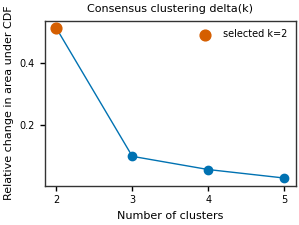
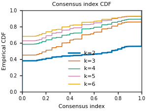
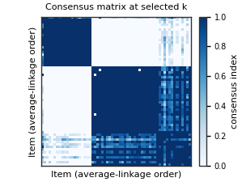
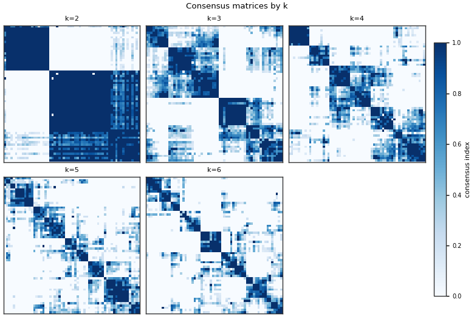
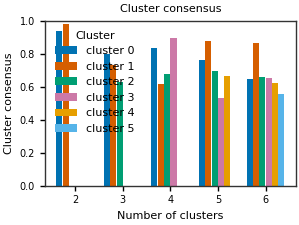
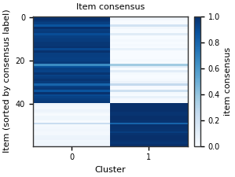
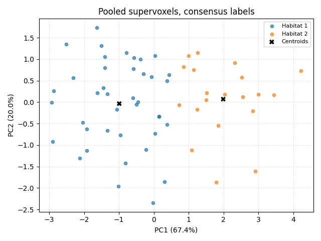
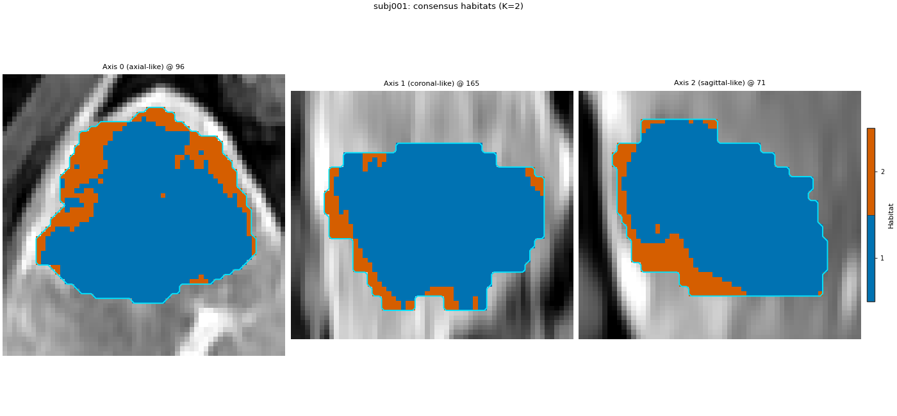

Note
Go to the end to download the full example code.
Consensus clustering of habitats#
Background. K-means and a Gaussian mixture pick a habitat count from a score curve (inertia, BIC, silhouette, …). Consensus clustering (Monti et al., 2003) asks a different question: across many resamples of the same supervoxels, which pairs keep landing in the same cluster, and for which count K is that co-clustering stable?
License. The numerical step is the InMoose port of Žiga Sajovic’s
implementation, vendored at habit/third_party/inmoose/ under
GPL-3.0-or-later. The rest of HABIT stays Apache-2.0. Using
Spec("consensus") or
ConsensusHabitatModelFitter uses that GPL
component. The GPL text is habit/third_party/inmoose/LICENSE.
What this page runs. The same two-step analysis as
Clustering algorithm and number of habitats, with only
the fit stage changed. Pooled supervoxels are the items. The vendored
algorithm resamples items only (not features), at the InMoose default
fraction 0.5. This page uses 20 resamples and K from 2 to 6 so the figures
stay readable; the class default is 50 resamples and K from 2 to 10.
bestK is their relative change in area under the consensus-index CDF.
That curve stops at max_habitats - 1: the top of the range is never
selected. This is not Bioconductor ConsensusClusterPlus (no PAC, no
feature resampling).
The consensus cut labels only the fitted supervoxels. HABIT stores the
mean feature vector of each consensus group as a centroid, then paints
the map with nearest-centroid assignment so a later subject can be
labelled without rebuilding the n x n matrix.
When to use. When you need a stability argument for K on a few dozen
to a few hundred supervoxels. Do not point it at a voxel-level matrix:
each candidate K keeps an n x n consensus matrix.
Warning
habit/third_party/inmoose/ is GPL-3.0-or-later. HABIT’s Apache-2.0
license does not replace that license.
Fit habitats with consensus clustering#
Change DATA / MODALITIES / ROI to your preprocessed layout.
The fit stage is the only one that differs from a k-means two-step run.
sphinx_gallery_thumbnail_number = 3
from pathlib import Path
import matplotlib.pyplot as plt
import numpy as np
from habit.contracts import cohort_from_directory
from habit.datasets import fetch_demo
from habit.recipes import Study
from habit.spec import HabitatSpec, Spec, Stage
from habit.viz import (
plot_consensus_cdf,
plot_consensus_cluster_stability,
plot_consensus_delta,
plot_consensus_item_stability,
plot_consensus_matrices,
plot_consensus_matrix,
plot_habitat_clustering_pca_2d,
plot_habitat_overlay,
)
DATA = fetch_demo()
MODALITIES = ("pre_contrast", "LAP", "PVP", "delay_3min")
ROI = "LAP"
cohort = cohort_from_directory(DATA, modalities=MODALITIES, roi=ROI)
train = cohort[:2]
Path("out").mkdir(exist_ok=True)
spec = HabitatSpec(
name="consensus_clustering",
stages=(
Stage("extract", Spec("raw", {"modalities": list(MODALITIES), "roi": ROI})),
Stage("preprocess", Spec("winsorize", {"winsor_limits": [0.01, 0.01]})),
Stage("preprocess2", Spec("zscore")),
Stage("partition", Spec("kmeans", {"n_supervoxels": 30})),
Stage("pool", Spec("pool")),
Stage(
"fit",
Spec(
"consensus",
{
"min_habitats": 2,
"max_habitats": 6,
"n_resamples": 20,
"resample_proportion": 0.5,
"inner": "kmeans",
"n_init": 10,
},
),
),
Stage("assign", Spec("nearest_centroid")),
),
random_seed=0,
)
result = Study(spec).fit_predict(train)
report = result.habitat_model.preprocessing_state["consensus"]
print(result.habitat_model.summary())
print("license:", report["license"])
print("implementation:", report["implementation"])
print(
"selected k:",
report["selected_k"],
"| centroids:",
result.habitat_model.n_habitats,
"| items:",
report["n_items"],
)
HABIT demo data (cached)
DATA (preprocessed root): C:\Users\dongm\.habit_data\demo-data-v1\preprocessed
On-disk inventory of this folder:
subjects (5): subj001, subj002, subj003, subj004, subj005
image series: LAP, PVP, delay_3min, pre_contrast
mask keys: LAP, PVP, delay_3min, pre_contrast
example image: images/subj001/delay_3min/WATER__BH_Ax_LAVA_Flex_3min_Series0012.nrrd
example mask: masks/subj001/delay_3min/WATER__BH_Ax_LAVA_Flex_10min_Series0017_mask.nrrd
Your own data must use the same folder tree (change IDs / series names):
DATA/
images/<subject_id>/<modality>/<one image file>
masks/<subject_id>/<roi>/<one mask file>
Then load it with the same call the demos use:
cohort = cohort_from_directory(DATA, modalities=("LAP",), roi="LAP")
Swap DATA / modalities / roi to match your tree. Mask key is often the
same as one image series (here LAP).
Cohort.map[_ComputeUnits]: 0%| | 0/2 [00:00<?, ?it/s]
Cohort.map[_ComputeUnits]: 50%|█████ | 1/2 [00:04<00:04, 4.32s/it]
Cohort.map[_ComputeUnits]: 100%|██████████| 2/2 [00:06<00:00, 3.01s/it]
Cohort.map[_ComputeUnits]: 100%|██████████| 2/2 [00:06<00:00, 3.02s/it]
Cohort.map[_AssignPrecomputedUnits]: 0%| | 0/2 [00:00<?, ?it/s]
Cohort.map[_AssignPrecomputedUnits]: 50%|█████ | 1/2 [00:00<00:00, 4.15it/s]
Cohort.map[_AssignPrecomputedUnits]: 100%|██████████| 2/2 [00:00<00:00, 4.01it/s]
Cohort.map[_AssignPrecomputedUnits]: 100%|██████████| 2/2 [00:00<00:00, 4.01it/s]
HabitatModel consensus-5801b87805a70a0d
habitats : 2
features (4) : pre_contrast, LAP, PVP, delay_3min
defining cohort : n=2
modalities : pre_contrast, LAP, PVP, delay_3min
cohort digest : cc1b16a34cc7478d...
produced by : habitat_model_fitter.consensus
habit version : 3.0.0
random seed : 0
preprocessing state: consensus
license: GPL-3.0-or-later
implementation: inmoose.consensus_clustering.consensusClustering (GPL-3.0-or-later; Sajovic / Weill / Appe). See habit/third_party/inmoose/LICENSE.
selected k: 2 | centroids: 2 | items: 60
Delta(k): where the consensus distribution changes most#
The marked point is bestK from the vendored rule. Read a flat tail as
“more clusters do not make the consensus much sharper”, not as a p-value.
fig = plot_consensus_delta(report, title="Consensus clustering delta(k)")
fig.savefig("out/consensus_delta.png", dpi=150, bbox_inches="tight")
plt.show()

CDF of the consensus index#
A useful K pushes the CDF toward a step: pairs are either almost always together (index near 1) or almost never (index near 0). The thick line is the selected K. Diagonal entries are 1, as in the vendored area calculation.
fig = plot_consensus_cdf(report, title="Consensus index CDF")
fig.savefig("out/consensus_cdf.png", dpi=150, bbox_inches="tight")
plt.show()

Consensus matrix at the selected K#
Each cell is the fraction of resamples in which the two supervoxels were
both drawn and placed in the same cluster. Rows are ordered by average
linkage on 1 - consensus so stable groups form blocks.
fig = plot_consensus_matrix(report, title="Consensus matrix at selected k")
fig.savefig("out/consensus_matrix.png", dpi=150, bbox_inches="tight")
plt.show()

Consensus matrix at every candidate K#
fig = plot_consensus_matrices(report, title="Consensus matrices by k")
fig.savefig("out/consensus_matrices.png", dpi=150, bbox_inches="tight")
plt.show()

Cluster consensus#
For each cluster, the mean consensus index among its member pairs. A bar near 1 is a stable habitat; a gap is a singleton, which this implementation records as NaN.
fig = plot_consensus_cluster_stability(
report, title="Cluster consensus"
)
fig.savefig("out/consensus_cluster_stability.png", dpi=150, bbox_inches="tight")
plt.show()

Item consensus#
How tightly each supervoxel agrees with each cluster at the selected K. Rows are sorted by the consensus label.
fig = plot_consensus_item_stability(report, title="Item consensus")
fig.savefig("out/consensus_item_stability.png", dpi=150, bbox_inches="tight")
plt.show()

Supervoxels in the consensus partition#
Points are pooled supervoxels. Colours are the consensus labels (shown from 1, matching habitat ids when every cluster is occupied). Crosses are the centroids written into the habitat model.
frames = [one.feature_frame().to_numpy(dtype=float) for one in result.units]
matrix = np.vstack(frames)
labels = np.asarray(report["training_labels"], dtype=int)
label_ids = [int(v) for v in report["consensus_label_ids"]]
if label_ids == list(range(len(label_ids))):
labels = labels + 1
centers = np.asarray(result.habitat_model.centroids, dtype=float)
else:
centers = None
fig = plot_habitat_clustering_pca_2d(
matrix,
labels,
centers=centers,
title="Pooled supervoxels, consensus labels",
)
fig.savefig("out/consensus_pca.png", dpi=150, bbox_inches="tight")
plt.show()

Habitat map on the image#
Nearest centroid of the consensus groups, on the first training patient. This is the map a new subject would receive from the saved model.
subject = train[0]
fig = plot_habitat_overlay(
subject.image(ROI),
result.habitat_maps[0],
title=f"{subject.subject_id}: consensus habitats (K={result.habitat_model.n_habitats})",
crop_to="labels",
)
fig.savefig("out/consensus_overlay.png", dpi=150, bbox_inches="tight")
plt.show()

F:\work\habit_project\habit\viz\habitat_overlay.py:806: UserWarning: Display geometry conflict: image/anatomy direction does not match mask/label direction. Using the mask/label direction so coronal/sagittal superior-up follows the labelled anatomy. Pass direction= to override.
resolved_direction, resolved_spacing = resolve_display_geometry(
How to read the result#
Prefer a selected K whose CDF is closer to a step and whose consensus matrix shows a few dark blocks, and whose cluster-consensus bars sit well above 0.5.
A pick on the last delta point (
max_habitats - 1) means the range was too narrow for this rule. Widenmax_habitatsand rerun.The overlay can disagree slightly with the consensus labels: assignment is Euclidean nearest centroid, and a consensus group need not be a sphere in feature space. Say which of the two you interpret.
For a study, keep
n_resamplesat the default 50 or higher, and recorddescribe_methods()together with the GPL notice above.
Where to go next#
Score curves for k-means and the Gaussian mixture, on the same design: Clustering algorithm and number of habitats.
The supervoxel step that creates the items: Supervoxel method and count.
Saving the centroid model and applying it to another cohort: Train, save, and predict new patients.
Total running time of the script: (0 minutes 11.757 seconds)